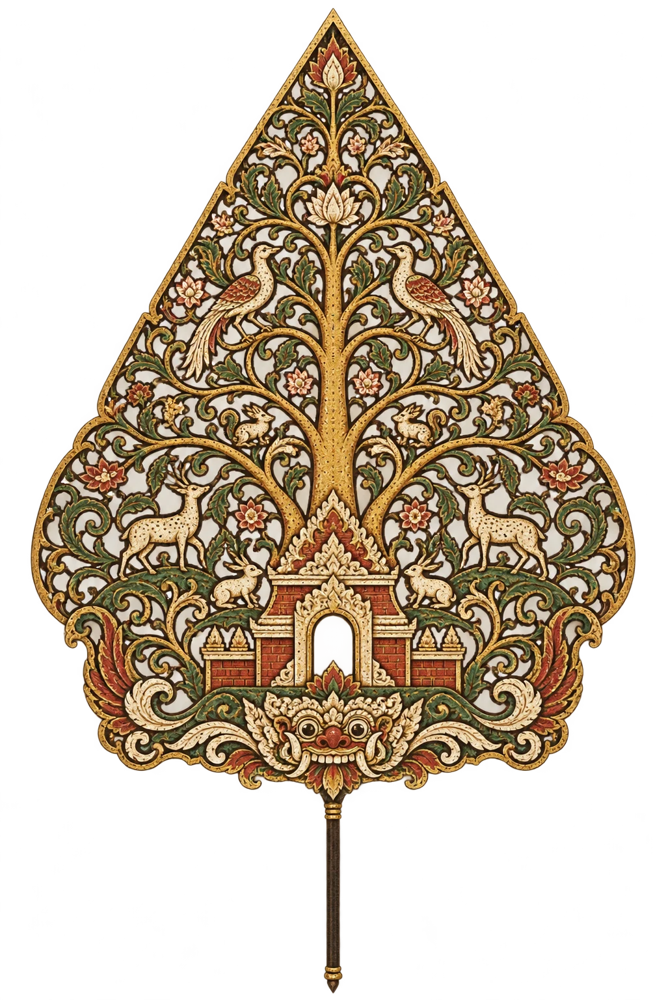

memuat wayang…

dalang terputus — aku menunggu
mode latihan
P1
—
0,00
arah
kanan
P2
—
0,00
arah
kiri
giliranmu menjadi dalang
Cerita dimulai dari tanganmu.
Nyalakan kamera, tunjukkan tangan, dan hidupkan wayangmu.
gestur apa pun yang terbaca akan membuka tiraiPARA TOKOH
Setiap tokoh, sebuah cerita.Pilih teman sepanggungmu.
Pemain 1
Pemain 2
TAHUKAH KAMU?01 / 12
Budaya di balik panggung.
Sedang menyiapkan cerita dari Jawa Timuran…